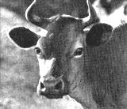
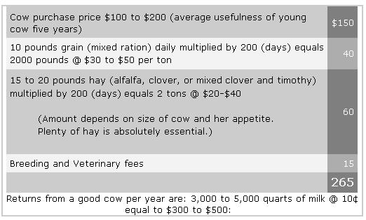
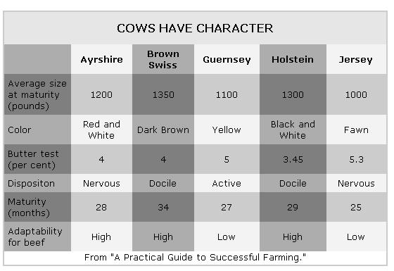

A Family Cow
KEEPING a cow, like marriage, is a confining and responsible relationship not to be entered into lightly. Flirtation, study, an engagement, even trial marriage are advocated, for dairymen, like fond parents, are unduly enamoured of their heifers.
By the Mother Earth News editors
1970-03-01
KEEPING a cow, like marriage, is a confining and responsible relationship not to be entered into lightly. Flirtation, study, an engagement, even trial marriage are advocated, for dairymen, like fond parents, are unduly enamoured of their heifers.
Like marriage, too, keeping a family cow is a great institution. In fact, American agricultural writers often refer to the cow as "The Foster Mother of the Human Race." This is undoubtedly a little over-enthusiastic for in many parts of Europe 80% of the milk is goat milk.
The first time you squat on your brand-new, insignificant three-legged milk stool and your new cow towers above you, a thousand pounds of the Lord-Only-Knows-What combination of unknown evil, wickedness, and danger and you see her big, horned head turn at the fumbling indignities you are attempting under her hind-quarters, you're bound to experience a sinking in the pit of your stomach and an intense feeling that a cow is too gigantic an undertaking for you. Anyway, if this feeling doesn't come over you at the beginning of your first milking, then it will unquestionably at the end when it dawns on you that all that milk, that big pail of milk, is going to be duplicated night and morning every day for the next ten months.
Actually, a cow isn't large or dangerous. In fact, compared with your car she's less than one-third the weight - and when you realize that the auto is responsible for some 30,000 deaths a year, not including some hundreds of thousand injuries, then you'll have to agree that a cow isn't dangerous. A family cow, particularly a Jersey, becomes the gentlest of pets.
As for the superabundance of milk - it's none too much when translated into terms of milk for the family, cream, skim-milk for chickens, pigs, and a calf, and particularly if you want to make ice cream, butter and cheese. If yours is an average, decently fed family, you are already using one cow's entire milk supply. There are in the United States, according to the census, something like 26,000,000 producing cows. That is at least one cow for each American family enjoying a sufficient amount of milk and milk products. In short, the point is: Are you going to keep a cow or go on paying somebody else to do it for you?
I know it's hard to believe that a family accustomed to buying one or a couple of quarts of milk a day can easily use 10 or 12 quarts. It was that way with us when we started getting 6 or 7 quarts of milk from our two milking goats. Honest; though, if you're going to have a productive homestead, you'll find it simple to use the milk effectively without setting up a milk route. For example, you'll be able to have plenty of real, heavy cream - for coffee, for cereal, for berries, for ice-cream, for cooking, for butter-making. Remember, it takes 10 quarts of milk to produce one quart of cream. And a quart of cream makes only a pound of butter . . . or a quart-and-a-half of ice cream . . . and just ask your wife how much butter and cream she'd like to use in cooking if she could use all she wanted!
For every quart of cream you produce, you'll have about 9 quarts of skim milk. This is the finest food you can feed pigs, chickens and other poultry. If you still think you'll have too much milk, there's the annual calf that your cow will produce. If you raise the calf to veal size, about 180 pounds, the calf will consume daily a pint of milk for each ten pounds it weighs.
Another thing to bear in mind is that although a cow isn't by any means something you can turn on or shut off like a faucet, you can to a certain extent control the amount of milk she produces; she can be just as efficient producing less milk, strange as this might seem. The efficiency of a cow is simply a comparison between what she costs to keep and how much she produces. During the course of a year a commercial dairy cow will consume about 2 tons of hay, require one to two acres of good pasture, and eat 2,000 pounds of grain or other concentrates. A homesteader interested in self-sufficiency usually has the pasture land and can make the hay, but has to buy the grain, A cow, however, doesn't need grain. Professor Carl Bender, of Rut gers, explained to me how a cow could be kept in perfectly good health on a diet of good hay, good pasture and in winter succulents such as beet pulp or the sugar beets themselves . Obvi ously, a cow that isn't fed grain won't give as much milk - probably it'll give only 70 % of what it would give when fed grain to supplement pasture and hay. But to the homesteader consider ing what to do with a cow's full. of milk, a cow that will give 7 quarts of milk a day instead of 10 quarts might be preferable, particularly when she can also eliminate a grain bill.
Less than an eighth of an acre will provide the 25 pounds of sugar beets a day necessary to feed your cow during the months when pasture is not good. Beets or mangels can be stored in a root-cellar. They are simply washed and sliced before feeding.
The more the countryman looks into the business of keeping a cow, the more practical it seems. Your first cost, buying the cow and fixing up to keep her, is figuratively speaking your last cost. For if you have some suitable pasture and raise your own hay and succulents, then the only other regular cash outlay should be about $15 dollars a year breeding and veterinary fees. On the credit side you should get at least 5,000 pounds of milk (about 2,500 quarts), a calf which will give you 90 pounds of veal, and 12 tons of good manure. If you've had to buy manure, then you'll appreciate how valuable 12 tons is.
All this sounds pretty rosy. But there is the other side, too. Although neither an elaborate nor expensive building is required, you'll need a barn of some sort. It should be draft-free, have a decent sized window to let in plenty of sun and fresh air.
Also, you'll need a place to store two tons of hay. Hay can be stacked outside the barn and covered with canvas, but this should be considered only an emergency measure. Of course, if you're going to buy your hay, you can buy it by the bale and then you'll need very little space. Eventually, you'll want to make your own hay, and you'll need storage space of at least 10 x 10 x 10, or the equivalent, to store two tons of loose hay. Incidentally, the rule for finding the number of tons in a mow is: Multiply length x width x height (in feet) and divide by 400 to 500 depending on the length of time the hay has been in - there's also a slight variation depending on the type hay.
Another thing you'll want is between one and two acres of good pasture. The pasture should be fenced into three small pastures to let you rotate the cow. Although many people stake out their cows, this is needless trouble compared to fencing a pasture so the cow can simply be turned loose into the pasture from the barn.
You'll need some equipment: milk pail, water pail, milking stool, square manure shovel, 6 prong manure fork with tines not over 1 3/4" apart - wider tines allow droppings to fall through - cow halter and rope, curry comb and brush, barn thermometer, udder wash cloths, milk scale, milk production record chart, insect spray gun, hay forks - one in loft, one in barn level - and a metal wheelbarrow. Total cost about - $30.
You should also run water to the barn. And you'll want to work out a manure pit or compost system for easy handling of manure.
Then there are certain items needed to handle the milk efficiently. Milk setting cans . . . milk strainer and filter discs . . an inexpensive butter churn and, if you can afford it, a small separator.
That'll be most everything - except for the cow.
What Breed To Select?
There is no best breed. Oftentimes a Jersey is the first choice for a family cow because its milk is richer and it is a smaller cow. A few people find a Jersey's milk too rich. (See table.)
One thing to determine before selecting a particular breed is how you're going to get your cow bred each year. Find out from your County Agent about the availability of artificial insemination. If this isn't possible, then you'll be better off by getting a cow of the same breed as the most convenient bull, if you intend to raise any heifers.
Buying a Cow
When you set out to buy a cow the most important thing to do is to be sure that you buy a healthy one. Have her tested for both tuberculosis and Bang's disease, and see that her udder is free of mastitis. Your veterinarian will check up on these.
If the seller hasn't kept accurate milking records, and only about one in ten dairymen do, then be present at two - or better three - successive milkings. Or ask for a written guarantee of the cow's milk production.
Buy from a reliable man. Remember, in spite of all the to-do about judging cattle at the shows by external appearance nobody can honestly tell how good a milker a cow is by looking at her. If that were possible there wouldn't be the thousands of dollars spent on record-keeping by the big milk producers.
A young cow is worth more than an old cow. Although, if you get an especially good buy in an old cow with an outstanding milk record, you might consider buying her and replacing her as soon as possible with her heifer. Naturally, this is something of a gamble. She may have a couple of bull calves before a female - and when she does have a heifer, it'll be almost 2 1/2 years before the heifer will be milking. A cow reaches its prime at about 7 years of age; if healthy and well-cared for she will produce well to 10 or more years.
How Much Time Does a Cow Take?
For 10 months of the year the family cow must be milked twice a day. Milking should be regular, but can be done at any two periods 12 hours apart. There is absolutely no reason to milk a cow at such an ungodly hour as 5 or 6 A. M. - that is, not a family cow. A cow will do as well milked at noon and again at midnight. Or a cow can be milked on a 10-14 hour schedule - say 8 in the morning and 6 in the evening. But milk her regularly - at least within 1/2 an hour of her scheduled time.
Feeding will take about 10 minutes and needs to be done morning and night.
Pasturing shouldn't take but a minute or two if you have wired runs from barn down to pastures. (See "Layout for a Productive Homestead.")
Caring for milk - straining, cooling, washing utensils 5 to 10 minutes.
Separating, every other day, about 10-15 minutes to run through 25 quarts or so: about 8-10 minutes to clean separator.
Butter making from cream takes about 30 minutes.
A small cheese takes about 3 hours to make, spread over about 6 weeks time.
In addition, a certain amount of time will be needed to make a couple of tons of hay a year and produce the sugar beets or other ensilage.
This sounds like quite an undertaking when you add it all up. But compare keeping a cow with a family garden. The dairy products consumed will exceed in retail value the total possible saving from the operation of a well-run vegetable garden including canned and stored vegetables.
Milking will take about 20 minutes - morning and night. Cleaning barn and removal of manure about 15 minutes. Grooming cow - about 5 minutes.
Watering should be made automatic. If by hand it will take 5 to 10 minutes.
Raising a calf calls for teaching the calf to drink and then pan feeding three times a day for 4 to 6 weeks.
Specific Costs and Return
Too often the benefits of productive country living have been interpreted solely in economic terms. How much more valuable is fresh milk with a 5% fat content as compared with the two or three day old store milk of only about 3% butter fat? To some people milk is milk - but to others fresh, rich milk and heavy cream from a Jersey cow is worth twice what ordinary milk costs.
Anyway, here are two sets of returns on keeping a cow. Neither take into account that fresh milk is usually preferable.
The first figures are from a state bulletin and are averages:
"Actual costs, on the average, for first year if pasture, housing, and bedding are available without monetary expenses are shown in the paragraph that follows:
"Jeanne is an ordinary crossbred Jersey-Guernsey purchased for $85. Her record of 1943 may be of interest even if the costs and prices may not apply elsewhere or at other times. She freshened in May and was milked for 318 days. She produced 8337 pounds of milk, ranging from a peak of 42 lbs. to a minimum of 12 lbs. This amounted to 3877 quarts of milk, an average of 12.2 qts. per day. Butterfat ranged up to 5.35% so she probably produced around 420 pounds of fat. This is equivalent to 462 pounds of 90% butter or an average of 1.45 lbs. of butter a day if all the milk had been thus used.
"Dairy products were consumed and sold as follows:
There are several bookkeeping approaches to these figures but they all show one thing clearly - that the family cow is a pretty good investment!
From "A Practical Guide to Successful Farming."
|
 Isn't she lovely? |
 |
 |
|
 |
|
|